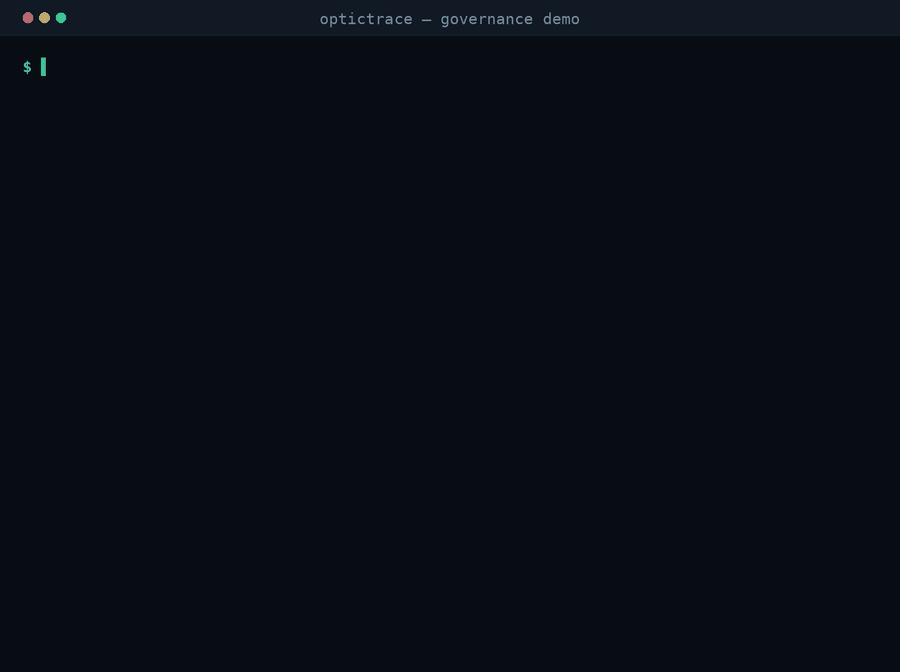
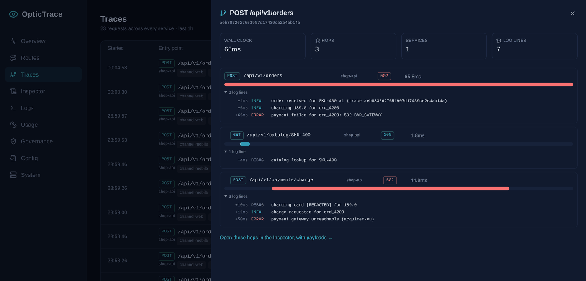
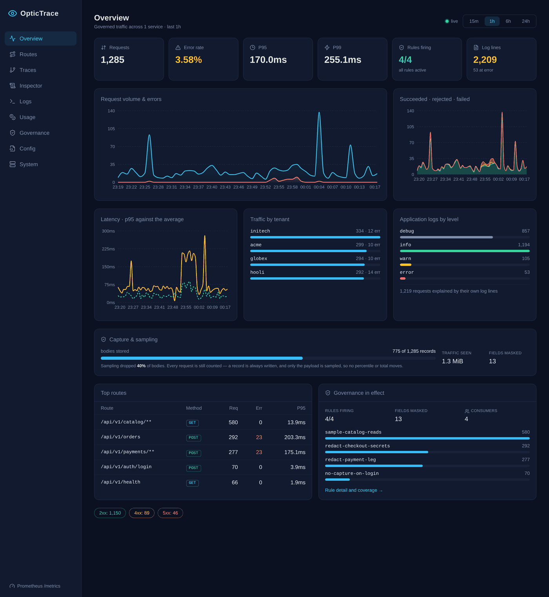
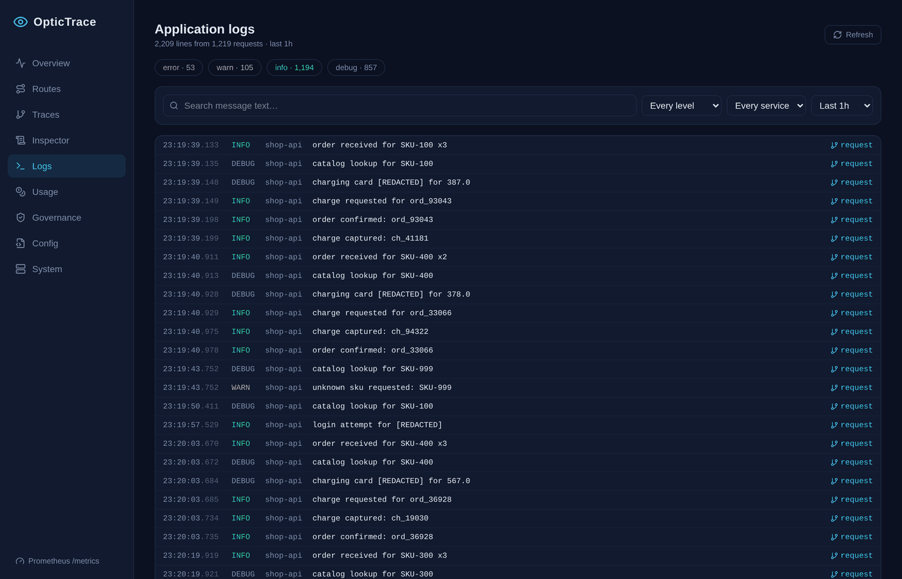
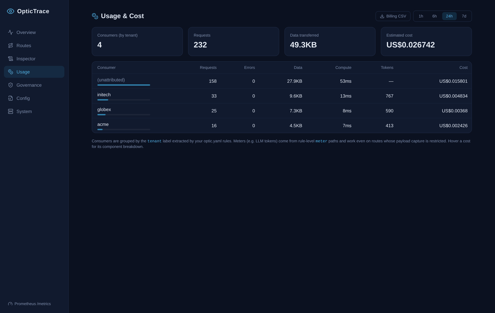
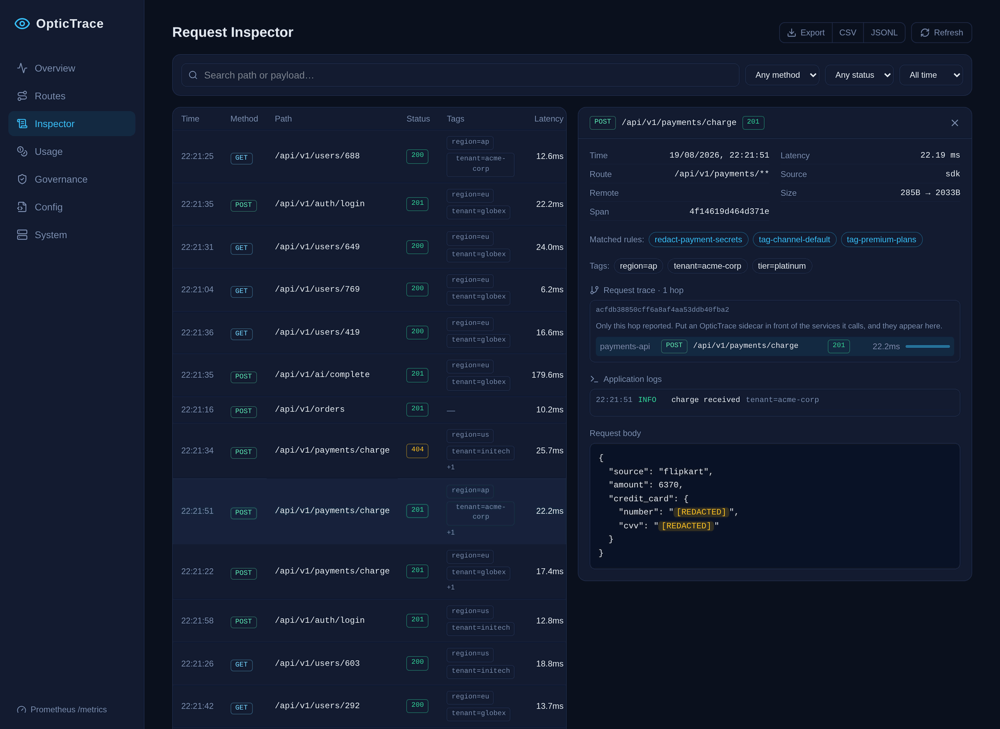
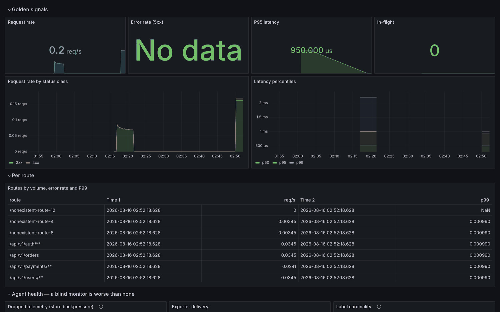

<meta charset="utf-8">
<meta name="viewport" content="width=device-width, initial-scale=1">
<link rel="icon" href="data:image/svg+xml,<svg xmlns='http://www.w3.org/2000/svg' viewBox='0 0 32 32'><rect width='32' height='32' rx='7' fill='%230E141D'/><circle cx='16' cy='16' r='9' fill='none' stroke='%2346C4E6' stroke-width='3'/><circle cx='16' cy='16' r='3.5' fill='%2346C4E6'/></svg>">
<title>OpticTrace</title>
<meta name="description" content="Declarative API telemetry and governance. One optic.yaml controls what your API traffic reveals.">
<meta property="og:title" content="OpticTrace">
<meta property="og:description" content="Declarative API telemetry and governance. One optic.yaml controls what your API traffic reveals.">
<meta property="og:type" content="website">
<link rel="stylesheet" href="assets/site.css">
<style>
  /* ---- Animated data-flow diagram ------------------------------------
     One request, drawn as it actually travels: through the proxy to the
     upstream and back untouched, while a bounded copy branches down into the
     telemetry lane and is masked in flight.

     The masking is the point of animating this at all. Every other way of
     saying "redaction happens before storage" is a sentence you have to trust;
     here you watch the card number turn into [REDACTED] between two stages,
     with the traffic lane carrying it through unchanged the whole time. */
  .dataflow { overflow-x: auto; margin-block: 1.6rem; }
  .dataflow svg { display: block; width: 100%; min-width: 700px; height: auto; }
  .df-box { fill: var(--surface); stroke: var(--line); stroke-width: 1; rx: 8; }
  .df-box.core { stroke: var(--accent); fill: #0d1a22; }
  .df-title { fill: var(--ink); font-size: 13px; font-weight: 600; }
  .df-sub { fill: var(--ink-3); font-size: 10.5px; }
  .df-rail { fill: none; stroke: var(--line); stroke-width: 1.5; }
  .df-rail.tel { stroke: var(--accent-deep); stroke-dasharray: 4 4; }
  .df-lane { fill: var(--ink-3); font-size: 10px; letter-spacing: 0.08em; text-transform: uppercase; }
  .df-stage { fill: #101820; stroke: var(--line); stroke-width: 1; rx: 6; }
  .df-stage-t { fill: var(--ink-2); font-size: 10.5px; text-anchor: middle; }
  .df-sink { fill: var(--ink-3); font-size: 10.5px; text-anchor: middle; }

  /* The packets. offset-path carries each one along its own route; a shared
     8s cycle with staggered delays keeps request, response and copy in step
     with each other. */
  /* opacity:0 is the resting state, not just a keyframe: an animation that
     has not started yet renders the element with its own styles, so a packet
     with a 4.6s delay would otherwise sit parked at the start of its path for
     the first half of every cycle. */
  .pkt { offset-rotate: 0deg; opacity: 0; animation: 8s linear infinite; }
  .pkt-req  { offset-path: path("M 150 78 L 388 78"); animation-name: run; }
  .pkt-up   { offset-path: path("M 624 78 L 838 78"); animation-name: run; animation-delay: 1.1s; }
  .pkt-resp { offset-path: path("M 838 104 L 150 104"); animation-name: run-back; animation-delay: 2.3s; }
  .pkt-copy { offset-path: path("M 580 110 L 580 178 L 150 178 L 150 196"); animation-name: run; animation-delay: 1.5s; }
  .pkt-tel  { offset-path: path("M 150 214 L 852 214"); animation-name: run; animation-delay: 2.4s; }
  .pkt-out  { offset-path: path("M 852 232 L 852 268 L 170 268 L 170 300"); animation-name: run; animation-delay: 4.6s; }

  @keyframes run { 0% { offset-distance: 0%; opacity: 0 } 4% { opacity: 1 }
                   14% { offset-distance: 100%; opacity: 1 } 18%, 100% { opacity: 0 } }
  @keyframes run-back { 0% { offset-distance: 0%; opacity: 0 } 4% { opacity: 1 }
                        18% { offset-distance: 100%; opacity: 1 } 22%, 100% { opacity: 0 } }

  .pkt-dot { fill: var(--accent); }
  .pkt-dot.copy { fill: var(--redact); }
  .pkt-label { font-family: var(--font-mono); font-size: 10px; text-anchor: middle; }
  .pkt-label.clear { fill: var(--ink-2); }
  .pkt-label.masked { fill: var(--redact); }

  /* The swap. Both labels ride the same packet; only their opacity changes, at
     the moment the packet clears the Govern stage. */
  .lbl-clear  { animation: 8s linear infinite clear-phase; animation-delay: 2.4s; }
  .lbl-masked { animation: 8s linear infinite masked-phase; animation-delay: 2.4s; }
  @keyframes clear-phase  { 0%, 10.5% { opacity: 1 } 11%, 100% { opacity: 0 } }
  @keyframes masked-phase { 0%, 10.5% { opacity: 0 } 11%, 18% { opacity: 1 } 19%, 100% { opacity: 0 } }

  .df-govern { animation: 8s linear infinite govern-pulse; animation-delay: 2.4s; }
  @keyframes govern-pulse {
    0%, 9% { stroke: var(--line); }
    11%, 15% { stroke: var(--redact); }
    20%, 100% { stroke: var(--line); }
  }

  /* Motion is explanatory here, not decoration — so when it is unwelcome the
     diagram holds its finished state (copy masked, in the telemetry lane)
     rather than disappearing. */
  @media (prefers-reduced-motion: reduce) {
    .pkt, .lbl-clear, .lbl-masked, .df-govern { animation: none; }
    .pkt { opacity: 1; }
    .pkt-req, .pkt-up, .pkt-resp, .pkt-copy, .pkt-out { offset-distance: 100%; }
    .pkt-tel { offset-distance: 78%; }
    .lbl-clear { opacity: 0; }
    .lbl-masked { opacity: 1; }
  }
</style>

<nav>
  <div class="nav-inner">
    <a class="brand" href="#top"><span class="lens" aria-hidden="true"></span> OpticTrace</a>
    <div class="nav-links">
      <a href="#how">How it works</a>
      <a href="#config">Config</a>
      <a href="#trace">Traces &amp; logs</a>
      <a href="#tooling">Tooling</a>
      <a href="#performance">Performance</a>
      <a href="integrate.html">Integrate</a>
      <a class="btn btn-ghost" href="https://github.com/dwarka-prasad/optictrace">GitHub</a>
    </div>
  </div>
</nav>

<main id="top">

  <!-- ============================ HERO ============================ -->
  <section class="hero wrap">
    <div class="eyebrow">Open source · Apache-2.0 · Go</div>
    <h1>Your API tells you everything. Decide what it <span class="masked">repeats</span>.</h1>
    <p class="lede">
      OpticTrace is a governance gateway for HTTP APIs. One declarative
      <code>optic.yaml</code> controls which routes are monitored, which payloads are
      stored, what gets masked, and which request attributes become Prometheus
      dimensions — reviewed in your repo like any other code.
    </p>
    <div class="hero-actions">
      <a class="btn btn-primary" href="https://github.com/dwarka-prasad/optictrace">Get started</a>
      <span class="install"><b>brew install</b> dwarka-prasad/tap/optictrace</span>
    </div>

    <figure class="hero-figure">
      
      <figcaption>
        Real output from a running agent. The client receives the original bytes;
        the card number, CVV, email and bearer token never reach telemetry.
      </figcaption>
    </figure>

    <div class="stats">
      <div class="stat"><b>+0.22 µs</b><span>added latency, restricted route</span></div>
      <div class="stat"><b>13</b><span>CLI commands</span></div>
      <div class="stat"><b>4</b><span>framework SDKs, one engine</span></div>
      <div class="stat"><b>0</b><span>CGO dependencies</span></div>
    </div>
  </section>

  <!-- ======================= THE TRADE-OFF ======================= -->
  <section class="band">
    <div class="wrap">
      <div class="redact-rule"></div>
      <div class="prose">
        <h2>API observability usually forces a bad trade</h2>
        <p>
          Log everything and credit card numbers end up in your log pipeline, replicated
          to three vendors and retained for a year. Log nothing and you are debugging
          production from status codes alone.
        </p>
      </div>
      <div class="versus">
        <div class="card bad-path">
          <span class="tag no">Option A</span>
          <h3>Capture everything</h3>
          <p>Fast to set up, and now every downstream system is in PCI scope. The decision was never written down, so nobody can tell you what is being stored.</p>
        </div>
        <div class="card bad-path">
          <span class="tag no">Option B</span>
          <h3>Capture nothing</h3>
          <p>Safe and useless. When something breaks at 3am you have a status code, a duration, and no idea what the client actually sent.</p>
        </div>
        <div class="card good-path">
          <span class="tag yes">OpticTrace</span>
          <h3>Declare the difference</h3>
          <p>Everything is captured unless a rule says otherwise. The rules live in your repo, get code-reviewed, and are testable in CI — so the trade-off is explicit and auditable.</p>
        </div>
      </div>
    </div>
  </section>

  <!-- ======================= HOW IT WORKS ======================= -->
  <section id="how" class="wrap">
    <div class="redact-rule"></div>
    <div class="eyebrow">How it works</div>
    <div class="prose">
      <h2>Two lanes, one tee point</h2>
      <p>
        A request travels one path while its telemetry travels another. The traffic lane
        is a plain reverse proxy. The telemetry lane branches off a <strong>bounded
        copy</strong> and is where every governance decision happens.
      </p>
      <p>
        This is the invariant everything else rests on: <strong>live traffic is never
        modified.</strong> A rule that masks <code>$.credit_card.number</code> does not
        strip the card from the payment request — the payment still works. It strips it
        from what gets logged, stored and exported.
      </p>
    </div>

    <div class="dataflow">
      <svg viewBox="0 0 940 330" role="img"
           aria-label="Animated diagram. A request travels from the client through OpticTrace to the upstream service and returns byte-for-byte unchanged. At the proxy a bounded copy branches into the telemetry lane, passes through evaluate, attach, observe, govern and fan-out stages, and the card number it carries becomes REDACTED at the govern stage before reaching the store, Prometheus, the dashboard and any exporters.">
        <!-- traffic lane -->
        <text class="df-lane" x="12" y="26">Traffic lane · untouched, full fidelity</text>
        <path class="df-rail" d="M 150 78 H 388 M 624 78 H 838" />
        <path class="df-rail" d="M 838 104 H 150" />
        <path class="df-rail" d="M 388 78 l -8 -4 v 8 z M 838 78 l -8 -4 v 8 z" fill="var(--line)" />
        <path class="df-rail" d="M 150 104 l 8 -4 v 8 z" fill="var(--line)" />

        <rect class="df-box" x="12" y="52" width="138" height="52" />
        <text class="df-title" x="26" y="74">Client</text>
        <text class="df-sub" x="26" y="90">any HTTP caller</text>

        <rect class="df-box core" x="388" y="46" width="236" height="64" />
        <text class="df-title" x="404" y="70">OpticTrace</text>
        <text class="df-sub" x="404" y="86">streams through · tees a copy</text>
        <text class="df-sub" x="404" y="100">bounded by capture_limit_bytes</text>

        <rect class="df-box" x="838" y="52" width="102" height="52" />
        <text class="df-title" x="852" y="74">Upstream</text>
        <text class="df-sub" x="852" y="90">your service</text>

        <text class="df-sub" x="300" y="126" text-anchor="middle">response returned byte-for-byte</text>

        <!-- the tee down into the telemetry lane -->
        <path class="df-rail tel" d="M 580 110 V 178 H 150 V 196" />

        <!-- telemetry lane -->
        <text class="df-lane" x="12" y="160">Telemetry lane · governed before anything is written</text>
        <path class="df-rail tel" d="M 150 214 H 852" />

        <rect class="df-stage" x="96" y="196" width="108" height="36" />
        <text class="df-stage-t" x="150" y="219">Evaluate</text>
        <rect class="df-stage" x="228" y="196" width="108" height="36" />
        <text class="df-stage-t" x="282" y="219">Attach</text>
        <rect class="df-stage" x="360" y="196" width="108" height="36" />
        <text class="df-stage-t" x="414" y="219">Observe</text>
        <rect class="df-stage df-govern" x="492" y="196" width="108" height="36" />
        <text class="df-stage-t" x="546" y="219">Govern</text>
        <rect class="df-stage" x="624" y="196" width="108" height="36" />
        <text class="df-stage-t" x="678" y="219">Fan out</text>

        <!-- sinks -->
        <path class="df-rail tel" d="M 852 232 V 268 H 170 V 300" />
        <path class="df-rail tel" d="M 386 268 V 300 M 602 268 V 300 M 818 268 V 300" />
        <text class="df-sink" x="170" y="316">SQLite · Postgres · ClickHouse</text>
        <text class="df-sink" x="386" y="316">Prometheus</text>
        <text class="df-sink" x="602" y="316">Dashboard</text>
        <text class="df-sink" x="818" y="316">OTLP · S3 · webhook</text>

        <!-- packets -->
        <g class="pkt pkt-req"><circle class="pkt-dot" r="4" /></g>
        <g class="pkt pkt-up"><circle class="pkt-dot" r="4" /></g>
        <g class="pkt pkt-resp"><circle class="pkt-dot" r="4" /></g>
        <g class="pkt pkt-copy"><circle class="pkt-dot copy" r="4" /></g>
        <g class="pkt pkt-out"><circle class="pkt-dot copy" r="4" /></g>
        <g class="pkt pkt-tel">
          <circle class="pkt-dot copy" r="4" />
          <text class="pkt-label clear lbl-clear" y="-26">"4111 1111 1111 1111"</text>
          <text class="pkt-label masked lbl-masked" y="-26">"[REDACTED]"</text>
        </g>
      </svg>
    </div>

    <div class="flow"><div class="flow-inner">
        <div class="stages">
          <div class="stage"><i>STAGE 1</i><b>Evaluate</b><span>Match rules, merge into one policy.</span></div>
          <div class="stage"><i>STAGE 2</i><b>Attach</b><span>Wire up buffers — or skip entirely.</span></div>
          <div class="stage"><i>STAGE 3</i><b>Observe</b><span>Status, latency and byte counts.</span></div>
          <div class="stage"><i>STAGE 4</i><b>Govern</b><span>Restrict, redact, extract meters.</span></div>
          <div class="stage"><i>STAGE 5</i><b>Fan out</b><span>One record to every sink.</span></div>
        </div>
      </div>
    </div>
    <p style="margin-top:1.4rem;font-size:0.88rem;color:var(--ink-3);max-width:70ch">
      Stage 2 is where the performance story lives: the policy resolves <em>before</em> any
      capture machinery attaches, so a route you have told OpticTrace to leave alone
      allocates nothing.
    </p>
  </section>

  <!-- ======================= CONFIG ======================= -->
  <section id="config" class="band">
    <div class="wrap">
      <div class="redact-rule"></div>
      <div class="eyebrow">The whole interface</div>
      <div class="prose">
        <h2>One file, reviewed like code</h2>
        <p>
          Parsing is strict — an unknown key is rejected at load, so a typo like
          <code>restirct:</code> fails immediately instead of quietly disabling your
          governance.
        </p>
      </div>

      <div class="split">
        <div>
          <div class="code-label">optic.yaml</div>
<pre><span class="c"># Everything is captured unless a rule subtracts from it.</span>
<span class="k">rules</span>:
  <span class="c"># Credentials never reach telemetry.</span>
  - <span class="k">name</span>: no-capture-on-auth
    <span class="k">match</span>: { <span class="k">path</span>: <span class="s">"/api/v1/auth/**"</span> }
    <span class="k">restrict</span>: [request_body, response_body, headers]

  - <span class="k">name</span>: redact-payment-secrets
    <span class="k">match</span>: { <span class="k">path</span>: <span class="s">"/api/v1/payments/**"</span> }
    <span class="k">redact</span>:
      <span class="k">headers</span>: [Authorization, X-Api-Key]
      <span class="k">query_params</span>: [api_key]
      <span class="k">json_fields</span>:
        - <span class="s">"$.credit_card.number"</span>   <span class="c"># exact path</span>
        - <span class="s">"$.*.ssn"</span>                <span class="c"># any single key</span>
        - <span class="s">"$.**.card_token"</span>        <span class="c"># any depth</span>
    <span class="k">labels</span>:
      <span class="k">tenant</span>: <span class="s">"header:X-Tenant-ID"</span>  <span class="c"># a Prometheus dimension</span>
    <span class="k">sample</span>: 0.25                <span class="c"># bodies for 25%…</span>
    <span class="k">keep_errors</span>: true          <span class="c"># …but always keep 5xx</span>

  <span class="c"># Prompts stay private; tokens are still counted and billed.</span>
  - <span class="k">name</span>: meter-ai-tokens
    <span class="k">match</span>: { <span class="k">path</span>: <span class="s">"/api/v1/ai/**"</span> }
    <span class="k">restrict</span>: [request_body, response_body]
    <span class="k">meter</span>: { <span class="k">tokens</span>: <span class="s">"$.usage.total_tokens"</span> }</pre>
        </div>
        <div>
          <div class="code-label">what gets stored</div>
<pre>{
  <span class="k">"request_body"</span>: {
    <span class="k">"amount"</span>: 4200,
    <span class="k">"credit_card"</span>: {
      <span class="k">"cvv"</span>: <span class="r">"[REDACTED]"</span>,
      <span class="k">"number"</span>: <span class="r">"[REDACTED]"</span>
    },
    <span class="k">"customer"</span>: {
      <span class="k">"email"</span>: <span class="r">"[REDACTED]"</span>,
      <span class="k">"name"</span>: <span class="s">"Ada Lovelace"</span>
    }
  },
  <span class="k">"headers"</span>: {
    <span class="k">"Authorization"</span>: <span class="r">"[REDACTED]"</span>,
    <span class="k">"X-Tenant-Id"</span>: <span class="s">"acme"</span>
  },
  <span class="k">"labels"</span>: { <span class="k">"tenant"</span>: <span class="s">"acme"</span> },
  <span class="k">"matched_rules"</span>: [<span class="s">"redact-payment-secrets"</span>]
}</pre>
          <p style="margin-top:0.9rem;font-size:0.87rem">
            Non-sensitive fields survive, so the record is still worth debugging with.
            Rules merge top-to-bottom: restrictions only narrow capture, while
            redactions and labels accumulate.
          </p>
        </div>
      </div>
    </div>
  </section>

  <!-- ======================= DASHBOARD ======================= -->
  <section class="wrap">
    <div class="redact-rule"></div>
    <div class="eyebrow">Built in</div>
    <div class="prose">
      <h2>A dashboard the binary serves itself</h2>
      <p>
        No separate frontend to deploy. The agent compiles the UI in and serves it from
        its control plane, on a port you can firewall independently of the API it proxies.
      </p>
      <p>
        Eight tabs, each answering a question someone actually arrives with:
        <strong>what is happening</strong> (Overview), <strong>which routes</strong>
        (Routes), <strong>what happened to this request</strong> (Traces),
        <strong>show me that exchange</strong> (Inspector), <strong>where did this log
        line come from</strong> (Logs), <strong>who is using what</strong> (Usage),
        <strong>is my policy actually applying</strong> (Governance), plus the config it
        loaded and the agent&rsquo;s own health.
      </p>
    </div>

    <div class="shots">
      <figure class="shot-item">
        
        <figcaption>
          <h3>Traces</h3>
          One row per request, however many services it touched — then a waterfall on a
          shared timeline. Offsets matter as much as widths: this checkout&rsquo;s two
          inner calls ran one after the other, so the payment leg owns the wall clock.
          The lines each hop logged sit underneath it, filed by span rather than matched
          by timestamp.
        </figcaption>
      </figure>

      <figure class="shot-item">
        
        <figcaption>
          <h3>Overview</h3>
          Golden signals, per-tenant traffic, and two readings you cannot get elsewhere:
          <strong>p95 drawn against the average</strong>, because the mean hides the
          requests worth investigating — the spike here is an incident the average barely
          registers — and <strong>capture &amp; sampling</strong>, the only honest check
          that a sampling rule is doing what you think. A rule that matched nothing gets
          called out by name.
        </figcaption>
      </figure>

      <div class="split" style="margin-top:0">
        <figure class="shot-item">
          
          <figcaption><h3>Application logs</h3>The line is usually what you have — someone
          pasted it. Every one links back to the request that wrote it.</figcaption>
        </figure>
        <figure class="shot-item">
          
          <figcaption><h3>Usage &amp; cost</h3>Per-tenant consumption, meters and billing export.</figcaption>
        </figure>
      </div>

      <figure class="shot-item">
        
        <figcaption>
          <h3>Request Inspector</h3>
          Redacted values are highlighted so you can see governance working, the rules
          responsible are named, and every non-sensitive field is still there — with the
          request&rsquo;s own trace and the log lines its handler wrote underneath it.
        </figcaption>
      </figure>

      <figure class="shot-item">
        
        <figcaption>
          <h3>Grafana, provisioned</h3>
          <code>docker compose up</code> brings the agent, Prometheus and Grafana up
          together with this dashboard and seven alert rules already loaded — including
          alerts on the agent's own health, because a monitor that silently stops
          recording is worse than none.
        </figcaption>
      </figure>
    </div>
  </section>

  <!-- ================== START FROM A SPEC ================== -->
  <section id="init" class="band">
    <div class="wrap">
      <div class="redact-rule"></div>
      <div class="eyebrow">Getting started</div>
      <div class="prose">
        <h2>Start from the spec you already have</h2>
        <p>
          Writing governance by hand against an API you may not have written means
          finding out what you missed once traffic flows. A specification already lists
          the routes and the shape of every payload, so most of the first draft can be
          derived rather than guessed.
        </p>
      </div>

      <div class="split">
        <div>
          <div class="code-label">OpenAPI 3.x or Swagger 2.0, YAML or JSON</div>
<pre>optictrace init -spec openapi.yaml -out optic.yaml

<span class="c">✓ wrote optic.yaml — 4 route(s), 4 rule(s), 10 field(s) masked</span></pre>
        </div>
        <div>
          <div class="code-label">what it derives</div>
<pre>  - name: redact-api-v1-payments-charge
    match:
      path: <span class="s">"/api/v1/payments/charge"</span>
    redact:
      query_params: [<span class="s">"api_key"</span>]
      json_fields:
        - <span class="s">"$.**.card.number"</span>   <span class="c"># high · PCI-DSS scope</span>
        - <span class="s">"$.**.card.cvv"</span>      <span class="c"># high · PCI-DSS scope</span>
        - <span class="s">"$.**.customer.email"</span> <span class="c"># medium · personal data</span></pre>
        </div>
      </div>

      <div class="prose" style="margin-top:1.6rem">
        <p>
          Credential headers come from the document&rsquo;s <code>securitySchemes</code> —
          the one thing a specification states outright rather than implies. Routes that
          look like credential exchanges get metadata-only capture, because there no
          redaction rule is as reliable as not recording the body at all.
        </p>
      </div>

      <ul class="ticks">
        <li><strong>It is a starting point, and the file says so.</strong> A spec describes
          what an API claims; governance has to hold for what it does</li>
        <li>A field the document does not model cannot be masked by a rule derived from
          it — and a field called <code>ref</code> can hold a card number, which is what
          <code>optictrace scan</code> finds on real traffic and no name heuristic will</li>
        <li>Caveats print to stderr, so <code>init -spec x.yaml &gt; optic.yaml</code>
          still gives you a clean file; it refuses to overwrite an existing policy, and
          validates what it generated before handing it over</li>
      </ul>
    </div>
  </section>

  <!-- ================== TRACES & APPLICATION LOGS ================== -->
  <section id="trace" class="wrap">
    <div class="redact-rule"></div>
    <div class="eyebrow">What it did, and why</div>
    <div class="prose">
      <h2>One request, every hop, and the lines it logged</h2>
      <p>
        Every record carries W3C trace context, so services reporting into one store
        stop being a flat list and become a request tree. The forwarded request
        carries <em>this</em> hop&rsquo;s span, which is what makes downstream calls
        nest under it rather than becoming siblings.
      </p>
      <p>
        That span is also handed to your application — so the lines it writes while
        serving a request can be filed under that exact request. Correlation is a
        fact, not a guess: nothing is matched by timestamp, which under concurrent
        traffic would file one tenant&rsquo;s log line inside another tenant&rsquo;s
        request.
      </p>
    </div>

<pre><span class="c">$ curl '.../api/logs?trace=a8f2890a4536810938c4ec89ddd40872'</span>

storefront  POST /api/v1/orders            200  span=83c03ddd parent=-
  catalog   GET  /api/v1/catalog/SKU-100   200  span=3a2c0d92 parent=83c03ddd
  payments  POST /api/v1/payments/charge   200  span=e0f134d5 parent=83c03ddd
      [debug] charging card <span class="s">[REDACTED]</span> for 129.00
      [info ] charge requested  amount=129.0 order_ref=ord-SKU-100
      [info ] charge captured   amount=129.0</pre>

    <div class="prose" style="margin-top:1.6rem">
      <p>
        The dashboard draws the same thing as a waterfall — every hop on one timeline,
        with each hop&rsquo;s log lines under it — so a request made of two 40ms calls
        reads as either nearly optimal or 40ms of avoidable waiting, which is a
        distinction a list of durations cannot make.
      </p>
      <p>
        That <code>[debug]</code> line is a service logging its own card number while
        someone was debugging — which is how the leak actually happens. Log lines are
        the highest-risk surface here: a payload is structured and can be redacted by
        path, but a log line is free text. So they run through the same policy on the
        way in rather than being stored raw and cleaned up later.
      </p>
    </div>

    <div class="split" style="margin-top:1.6rem">
      <div>
        <div class="code-label">optic.yaml</div>
<pre>telemetry:
  app_logs:
    enabled: <span class="k">true</span>
    level_min: info
    max_lines_per_span: <span class="k">200</span>
    retention_max_age: 168h
    drop_orphans: <span class="k">true</span>
    redact:
      patterns:
        - <span class="s">'Bearer\s+\S+'</span>
        - <span class="s">'\b\d{13,19}\b'</span>
      fields: [authorization, password]</pre>
      </div>
      <div>
        <ul class="ticks">
          <li><strong>Erasure covers logs.</strong> <code>purge</code> deletes a tenant&rsquo;s log lines with their records in one transaction — removing the requests but keeping the lines they wrote is not erasure</li>
          <li><strong>Drops are counted, never silent.</strong> Lines with no request behind them are discarded by default and reported in <code>optictrace_app_logs_dropped_total</code></li>
          <li><strong>Bounded by design.</strong> A level floor, a per-span line cap and a byte cap, so one retry loop cannot swamp the store</li>
          <li><strong>Storage is optional.</strong> <code>ext.AppLogStore</code> is separate from <code>ext.Store</code>, so a third-party driver without it is still a complete driver</li>
        </ul>
      </div>
    </div>
  </section>

  <!-- ======================= TOOLING ======================= -->
  <section id="tooling" class="band">
    <div class="wrap">
      <div class="redact-rule"></div>
      <div class="eyebrow">Because it owns your traffic history</div>
      <div class="prose">
        <h2>Things a static tool cannot do</h2>
        <p>
          OpticTrace holds a governed record of what your API actually did. That turns
          several hard questions into simple ones.
        </p>
      </div>

      <div class="features">
        <div class="feature">
          <span class="cmd">optictrace scan</span>
          <h3>Find what your rules missed</h3>
          <p>Redaction masks what you name. This catches the field you forgot, using checksums and issuer prefixes rather than guesswork — and prints the rule that fixes it. Samples are always masked.</p>
        </div>
        <div class="feature">
          <span class="cmd">optictrace check</span>
          <h3>Break nothing</h3>
          <p>Answers "is any live client actually using the field I am about to remove?" with usage counts and last-seen times. Exits non-zero in CI.</p>
        </div>
        <div class="feature">
          <span class="cmd">optictrace spec / sdk</span>
          <h3>Docs that write themselves</h3>
          <p>Infers an OpenAPI document from what clients really send, then emits typed TypeScript, Python or Go clients. Redacted fields still contribute their name and type.</p>
        </div>
        <div class="feature">
          <span class="cmd">optictrace mock</span>
          <h3>A mock with state</h3>
          <p><code>POST /cart</code> then <code>GET /cart</code> returns the item you added. Other routes return schema-conforming data, optionally generated by Claude.</p>
        </div>
        <div class="feature">
          <span class="cmd">optictrace test</span>
          <h3>Testable governance</h3>
          <p>Assert that a route redacts what it should, with no server and no network, so CI proves a refactor did not quietly stop masking.</p>
        </div>
        <div class="feature">
          <span class="cmd">optictrace replay</span>
          <h3>Replay, honestly</h3>
          <p>Re-issues captured traffic against staging and diffs status codes — skipping what governance made unreplayable rather than pretending.</p>
        </div>
      </div>
    </div>
  </section>

  <!-- ======================= PR BOT ======================= -->
  <section class="wrap">
    <div class="redact-rule"></div>
    <div class="eyebrow">In your workflow</div>
    <div class="prose">
      <h2>It reviews your pull requests</h2>
      <p>
        Every other command is one you have to remember to run. This one runs itself and
        answers the question a reviewer actually has: <strong>does this change make
        governance weaker?</strong>
      </p>
      <p>
        It evaluates the <em>same captured traffic</em> under the base branch's rules and
        the pull request's, then reports where they disagree. A rule reordering that
        silently stops masking a card number is invisible in a text diff and obvious here.
      </p>
    </div>

    <div class="pr">
      <div class="pr-head">
        <span class="avatar"><span class="lens" aria-hidden="true"></span></span>
        <strong style="color:var(--ink)">optictrace</strong> commented on this pull request
      </div>
      <div class="pr-body">
        <div class="pr-verdict">
          <b>✗ This change weakens governance on 4 points</b>
          <p>Each one below was verified by replaying real traffic. If it is deliberate, say so in the PR.</p>
        </div>
        <div class="tbl-scroll">
          <table class="pr-table">
            <thead>
              <tr><th></th><th>Route</th><th>Change</th><th style="text-align:right">Requests affected</th></tr>
            </thead>
            <tbody>
              <tr><td class="sev x">✗</td><td><code>POST /api/v1/payments/**</code></td><td>stops redacting <code>$.**.credit_card.cvv</code></td><td class="n">34</td></tr>
              <tr><td class="sev x">✗</td><td><code>POST /api/v1/payments/**</code></td><td>stops redacting query param <code>api_key</code></td><td class="n">34</td></tr>
              <tr><td class="sev w">⚠</td><td><code>POST /api/v1/auth/**</code></td><td>now captures request bodies (was restricted)</td><td class="n">34</td></tr>
              <tr><td class="sev w">⚠</td><td><code>POST /api/v1/payments/**</code></td><td>drops label <code>region</code></td><td class="n">34</td></tr>
            </tbody>
          </table>
        </div>
      </div>
    </div>
    <p style="margin-top:1.3rem;max-width:70ch;font-size:0.9rem">
      By default a pull request fails only for what <em>it</em> changed. Pre-existing
      findings are reported for context but do not block — failing every PR for a problem
      someone else introduced is how a bot gets muted, and a muted bot protects nothing.
    </p>
  </section>

  <!-- ======================= PERFORMANCE ======================= -->
  <section id="performance" class="band">
    <div class="wrap">
      <div class="redact-rule"></div>
      <div class="eyebrow">Measured, not asserted</div>
      <div class="prose">
        <h2>What it costs</h2>
        <p>
          "Low overhead" deserves numbers. These come from
          <code>go test -bench</code> comparing a bare handler against the same handler
          wrapped by the interceptor.
        </p>
      </div>

      <div class="chart" role="img" aria-label="Bar chart of added latency per request: restricted route 0.22 microseconds, full capture with redaction 5.4 microseconds, capture plus Prometheus 5.5 microseconds.">
        <div class="bar-row">
          <span class="bar-label">Restricted route <span style="color:var(--ink-3)">(capture off)</span></span>
          <div class="bar-track"><div class="bar-fill" style="width:4%;background:var(--good);animation-delay:.05s"></div></div>
          <span class="bar-val">+0.22 µs</span>
        </div>
        <div class="bar-row">
          <span class="bar-label">Full capture + redaction</span>
          <div class="bar-track"><div class="bar-fill" style="width:98%;background:var(--redact);animation-delay:.15s"></div></div>
          <span class="bar-val">+5.4 µs</span>
        </div>
        <div class="bar-row">
          <span class="bar-label">…plus Prometheus, custom label</span>
          <div class="bar-track"><div class="bar-fill" style="width:100%;background:var(--redact);opacity:.72;animation-delay:.25s"></div></div>
          <span class="bar-val">+5.5 µs</span>
        </div>
      </div>

      <div class="split" style="margin-top:2.2rem">
        <div class="prose" style="margin:0">
          <h3>Read the absolute numbers</h3>
          <p style="font-size:0.92rem">
            Against a typical API call of 1–100 ms, full capture is 0.005–0.5% of the
            request. It is not free — the cost is dominated by JSON parse and
            re-serialise — which is why <code>sample</code> with <code>keep_errors</code>
            exists for very hot routes.
          </p>
        </div>
        <div class="prose" style="margin:0">
          <h3>The design claim holds</h3>
          <p style="font-size:0.92rem">
            Restricting a route really is near-free. The policy resolves before any
            buffer is attached, so a route you have excluded costs 0.22 µs — and
            Prometheus observation, even with a custom label dimension, is noise at
            0.13 µs.
          </p>
        </div>
      </div>
      <p style="margin-top:1.4rem;font-size:0.8rem;color:var(--ink-3)">
        12th Gen Intel i5-1235U, Go 1.25, <code>-benchtime=2s</code>, parallel.
        Reproduce with <code>make bench</code>.
      </p>
    </div>
  </section>

  <!-- ======================= DEPLOY ======================= -->
  <section class="wrap">
    <div class="redact-rule"></div>
    <div class="eyebrow">Deploy it</div>
    <div class="prose">
      <h2>Sidecar, middleware, or SDK</h2>
      <p>All three share one interception code path, so governance behaves identically however you run it.</p>
    </div>
    <div class="split">
      <div>
        <div class="code-label">standalone gateway</div>
<pre><span class="c"># proxies to service.upstream, dashboard on :9095</span>
optictrace run -config optic.yaml</pre>
        <div class="code-label" style="margin-top:1.4rem">embedded in Go</div>
<pre>agent, _ := optictrace.<span class="k">New</span>(<span class="s">"optic.yaml"</span>)
<span class="k">defer</span> agent.Close()
http.ListenAndServe(<span class="s">":8080"</span>, agent.<span class="k">Middleware</span>(mux))</pre>
      </div>
      <div>
        <div class="code-label">Express</div>
<pre>app.<span class="k">use</span>(optictrace({
  configPath: <span class="s">'optic.yaml'</span>,
  agentUrl: <span class="s">'http://localhost:9095'</span>,
}));</pre>
        <div class="code-label" style="margin-top:1.4rem">FastAPI</div>
<pre>app.add_middleware(
    OpticTraceMiddleware,
    config_path=<span class="s">"optic.yaml"</span>,
    agent_url=<span class="s">"http://localhost:9095"</span>,
)

<span class="c"># your ordinary logging, filed under the request that wrote it</span>
logging.getLogger().addHandler(
    <span class="k">OpticTraceLogHandler</span>(<span class="s">"http://localhost:9095"</span>))</pre>
        <div class="code-label" style="margin-top:1.4rem">Java · Spring Boot, Quarkus, Jetty</div>
<pre><span class="k">new</span> OpticTraceFilter(
    <span class="s">"optic.yaml"</span>, <span class="s">"http://localhost:9095"</span>, <span class="s">"checkout"</span>);

Logger.getLogger(<span class="s">""</span>).addHandler(
    <span class="k">new</span> OpticTraceLogHandler(agentUrl, <span class="s">"checkout"</span>));</pre>
        <ul class="ticks">
          <li>SDKs apply governance <strong>in-process</strong> — raw payloads never cross a process boundary</li>
          <li>All four evaluate the <strong>same rule engine</strong>: the same optic.yaml producing different series depending on which runtime served the request would be worse than no telemetry, so parity is asserted by each SDK's suite against a live agent</li>
          <li>With no <code>listen</code> and no <code>upstream</code> the agent runs in <strong>collector mode</strong>: store, metrics and dashboard, no proxy in the request path</li>
          <li>SQLite for a sidecar, Postgres when several agents share history</li>
          <li>Export to files, webhooks, OpenTelemetry, or your own executable</li>
        </ul>
      </div>
    </div>
  </section>

  <!-- ======================= CTA ======================= -->
  <section class="band">
    <div class="wrap cta">
      <div class="redact-rule"></div>
      <h2>Try it in about a minute</h2>
      <p class="prose" style="margin-bottom:1.6rem">
        The Compose stack brings up the agent, a demo API, Prometheus and Grafana with
        dashboards and alerts already provisioned — and deliberately leaves one route
        ungoverned so <code>scan</code> has something to find.
      </p>
<pre>git clone https://github.com/dwarka-prasad/optictrace &amp;&amp; <span class="k">cd</span> optictrace
docker compose up --build

<span class="c"># http://localhost:9095  dashboard · metrics · APIs</span>
<span class="c"># http://localhost:3000  Grafana</span>
<span class="c"># http://localhost:9090  Prometheus</span></pre>
      <p class="prose" style="margin-top:1.4rem;font-size:0.93rem;color:var(--ink-3)">
        Want to see the SDK, traces and application logs working together?
        <code>examples/python-shop</code> is three FastAPI services making real calls to
        each other, with a 25-assertion suite that checks the claims on this page
        against a live stack. <code>examples/springboot-shop</code> does the same on the
        JVM — one checkout that fans out to a catalog read and a payment charge over
        real HTTP, so a single request produces three correlated spans.
      </p>
      <p class="prose" style="margin-top:1rem;font-size:0.93rem;color:var(--ink-3)">
        Prefer just the binary? <code>brew install dwarka-prasad/tap/optictrace</code> covers
        macOS and Linux on Intel and ARM, <code>go install</code> builds from source, and every
        release ships checksummed, cosign-signed archives with an SBOM.
      </p>
      <p class="prose" style="margin-top:1.4rem;font-size:0.93rem;color:var(--ink-3)">
        Putting it in front of something that already exists? The
        <a href="integrate.html">integration guide</a> has the steps for each route —
        sidecar on a host, in Docker, in Compose or in Kubernetes; middleware for
        Express, FastAPI, Java, Go and Gin — plus a rollout order for a service already
        in production that never has a step where the store holds data you did not
        intend it to.
      </p>
      <div class="hero-actions" style="margin-top:1.8rem">
        <a class="btn btn-primary" href="integrate.html">Integration guide</a>
        <a class="btn btn-ghost" href="https://github.com/dwarka-prasad/optictrace">Read the docs on GitHub</a>
        <a class="btn btn-ghost" href="https://github.com/dwarka-prasad/optictrace/releases">Download a release</a>
      </div>
    </div>
  </section>

  <footer class="wrap">
    <div class="foot-grid">
      <div>
        <div class="brand" style="margin-bottom:0.4rem">
          <span class="lens" aria-hidden="true"></span> OpticTrace
        </div>
        Declarative API telemetry &amp; governance · Apache-2.0
      </div>
      <div class="foot-links">
        <a href="https://github.com/dwarka-prasad/optictrace">GitHub</a>
        <a href="https://github.com/dwarka-prasad/optictrace/blob/main/CHANGELOG.md">Changelog</a>
        <a href="https://github.com/dwarka-prasad/optictrace/blob/main/CONTRIBUTING.md">Contributing</a>
        <a href="https://github.com/dwarka-prasad/optictrace/releases">Releases</a>
      </div>
    </div>
  </footer>
</main>
